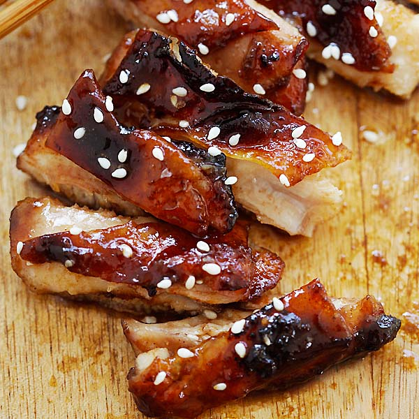

Char Siu Chicken

Descriptions
This dish is so easy to make, but so delicious! Due to the marinating time, you do need to plan ahead to make this, but the wait is worth it. I serve this with a skinny Hawaiian slaw and there are never leftovers. Whether I roast it or grill it, this recipe never fails.
Ingredients
- 1 cup brown sugar
- ¼ cup soy sauce
- 2 tablespoons hoisin sauce
- 1 clove garlic, minced
- 2 tablespoons honey
- 1 tablespoon sriracha sauce
- 1 tablespoon sherry
- 1 tablespoon red food coloring (Optional)
- 1 teaspoon sesame oil
- ½ teaspoon Chinese five-spice powder
- ⅛ teaspoon liquid smoke flavoring (Optional)
- 12 skinless, boneless chicken thighs
Steps